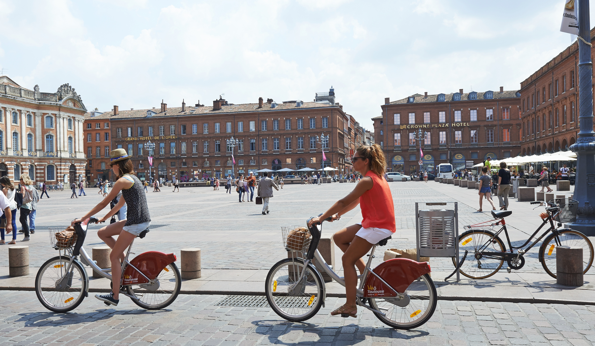

Slider
Map
About
Velo Toulouse
Slider
instruction image 1
Instruction image 2

Instruction image 3
Instruction image 4
Instruction image 5
Map
Informations de la station
Statut de la station :
Nom de la station :
Adresse de la station :
Nombre de places totales :
Nombre de velos disponibles :
info avec hover
info avec hover
info avec hover
la reservation du velo a la station
a l'adresse
par
temps restant :